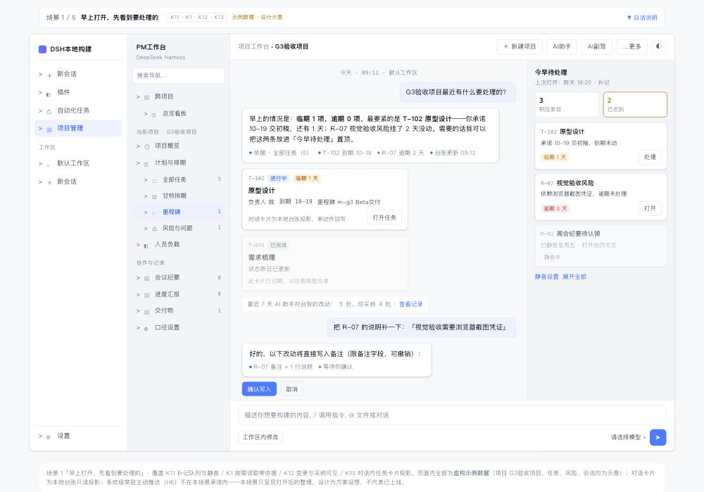
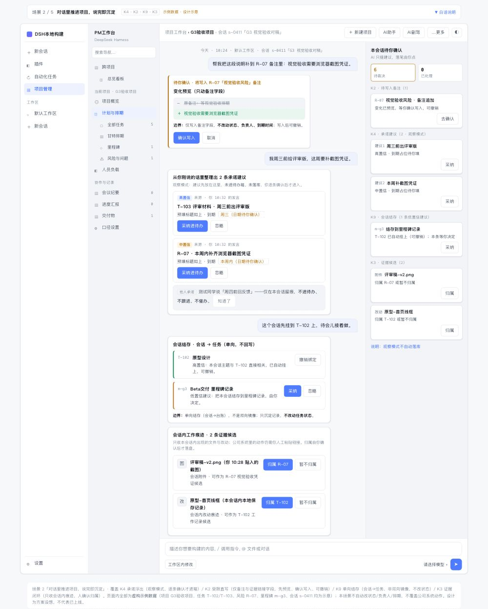
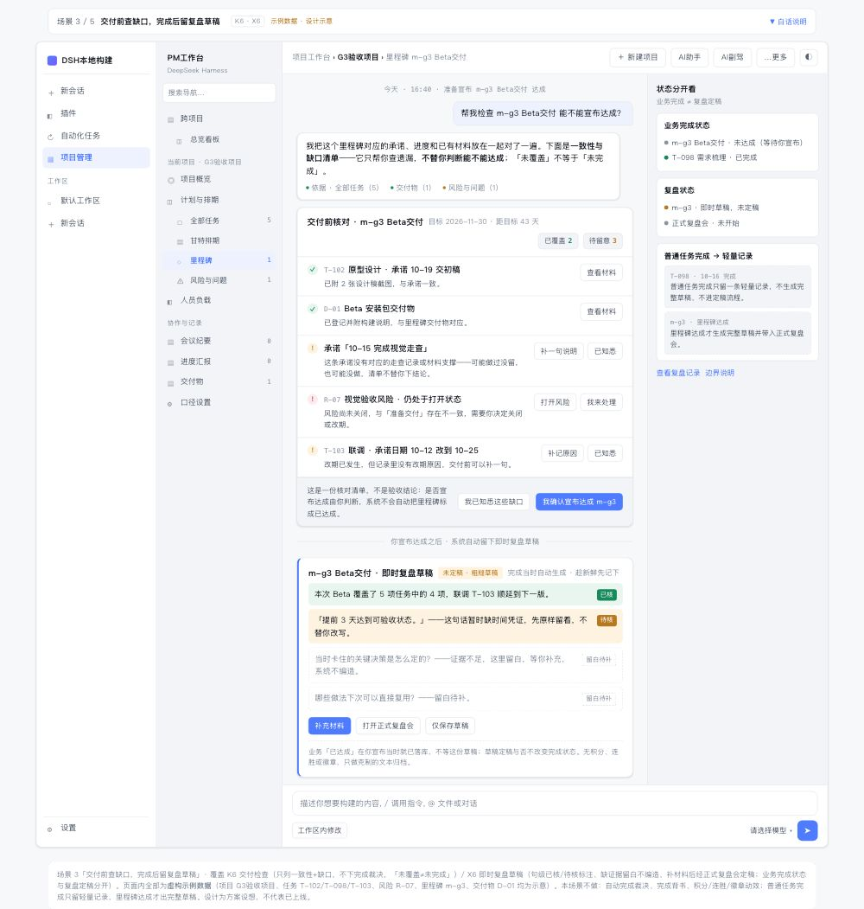
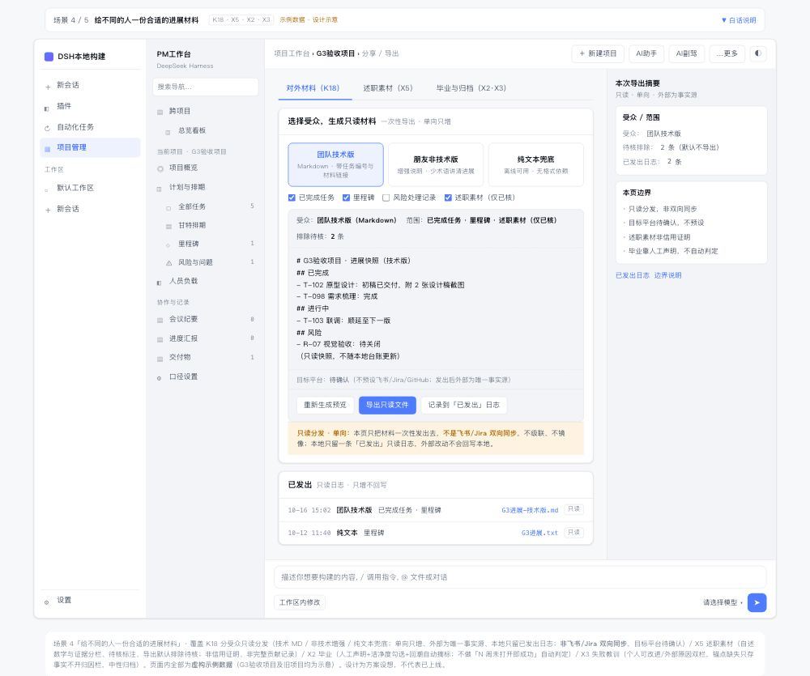
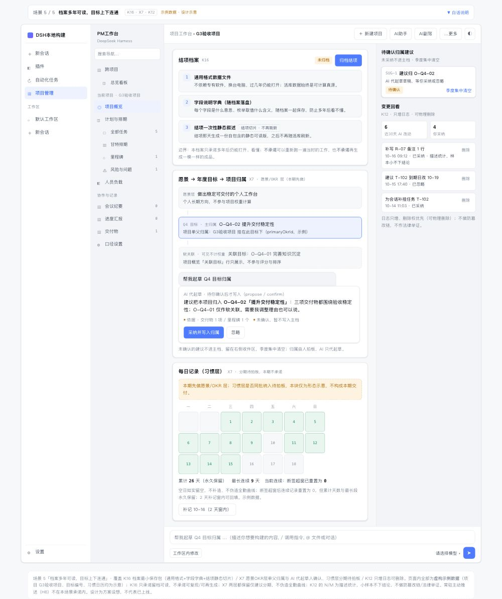
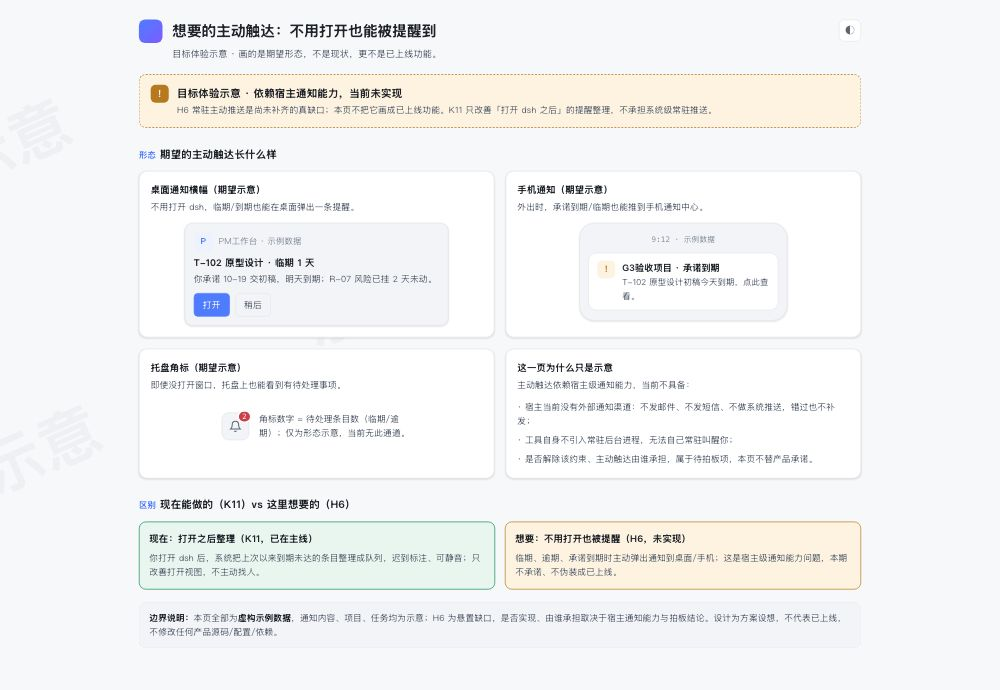
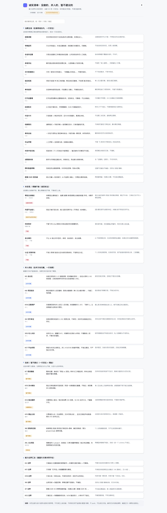

PM工作台 × dsh 深度融合 · 一天工作场景
按「早上打开 → 白天干活 → 完成大事 → 对外汇报 → 长期沉淀」的推荐组合主线，重出的面向用户效果图（返工版）。
示例数据 · 设计示意
嵌入现有 dsh 界面形态
含未实现项标注（见附录）
◐
早上打开工作台
09:00 · 打开 dsh

早上打开，先看到要处理的
K11 · K1 · K12 · K13
打开即见「今早待处理」队列（迟到标注/静音）；问一句项目状态，回答带台账依据；对话里嵌任务卡片。
打开场景 →
白天在对话里推进项目
10:00–17:00 · 边聊边干

对话里推进项目，说完即沉淀
K4 · K2 · K9 · K3
聊天中出现的承诺自动整理成待办建议；补备注/挂证据说一句即可（确认+可撤销）；会话绑定任务，工作痕迹收成证据。
打开场景 →
完成大事
里程碑达成 · 交付前

交付前查缺口，完成后留复盘草稿
K6 · X6
宣布完成前系统帮你核对承诺与材料缺口（不替你验收）；重要任务完成后自动生成粗糙即时复盘草稿，补材料后定稿。
打开场景 →
对外汇报分享
周报/述职 · 给别人看

给不同的人一份合适的进展材料
K18 · X5 · X2 · X3
按受众生成只读材料（技术版/非技术版/纯文本）；述职素材待核标注；真正收尾的项目标记毕业；失败项目中性归档。
打开场景 →
长期沉淀
结项之后 · 目标之上

档案多年可读，目标上下连通
K16 · X7 · K12
结项档案用通用格式保存、多年后仍可打开；愿景 → 年度目标 → 项目归属，AI 代起草归属由你确认；AI 改动可回看可删除。
打开场景 →
H6
常驻主动推送 · 目标体验示意（当前未实现）

想要的主动触达
H6
你期望的形态：不用打开也能被提醒。此图为目标体验示意，依赖宿主通知能力，当前未实现。
打开示意 →
附录
能力边界与未实现项

诚实清单：没做的、并入的、暂不建议的
全部 30 项定位
H6 常驻推送未实现；K18 非双向同步；自主签约不做；合并方向并入何处；后续/暂不建议方向各一行定位与理由。
打开附录 →
总览说明：
本目录是「PM工作台 × DeepSeek Harness 深度融合」推荐组合主线的
面向用户效果图
，嵌入现有 dsh 界面形态（三栏：功能导航 / PM工作台 / 主内容区）。页面内全部为
虚构示例数据
（项目 G3验收项目 等），设计为方案设想，不代表已上线；能力边界与未实现项见附录。不修改任何产品源码/配置/依赖。
推荐浏览顺序：
先看
S1 早上打开
（先看到要处理的）与
S2 对话推进
（说完即沉淀）——两个最高频场景；
再看
S3 完成大事
（查缺口+复盘草稿）与
S4 对外汇报
（分受众材料）；
最后看
S5 长期沉淀
与
H6 目标体验示意
（含未实现标注），收尾看附录。